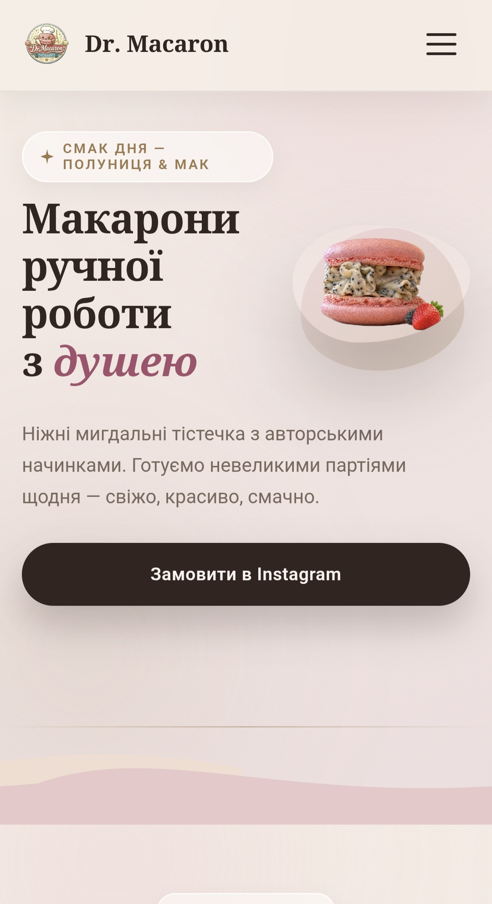
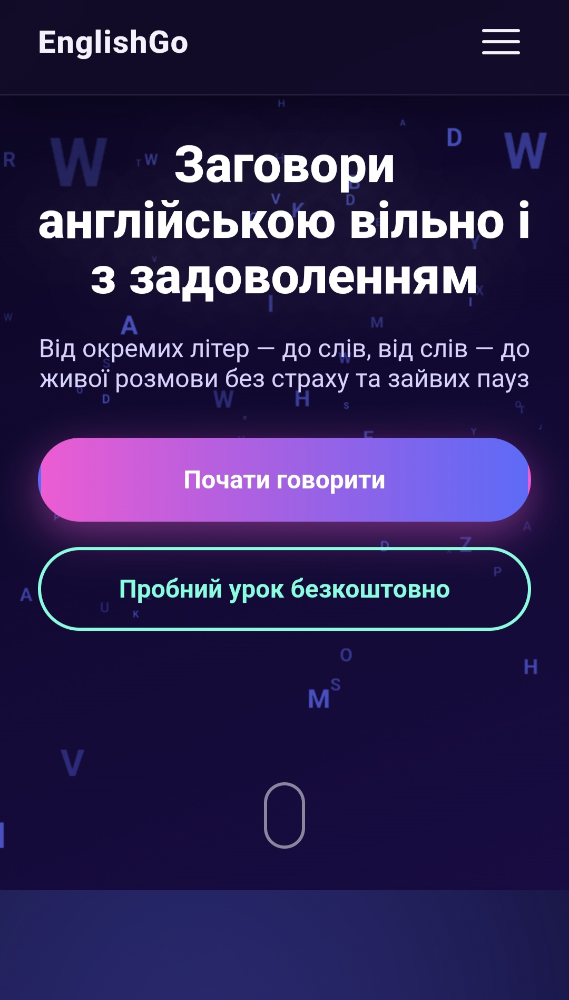
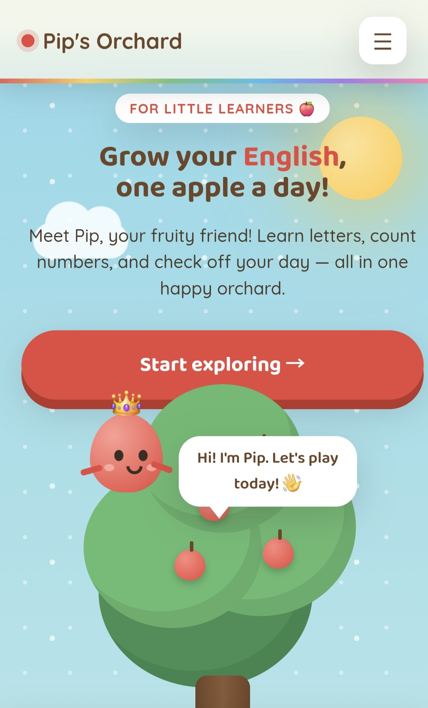
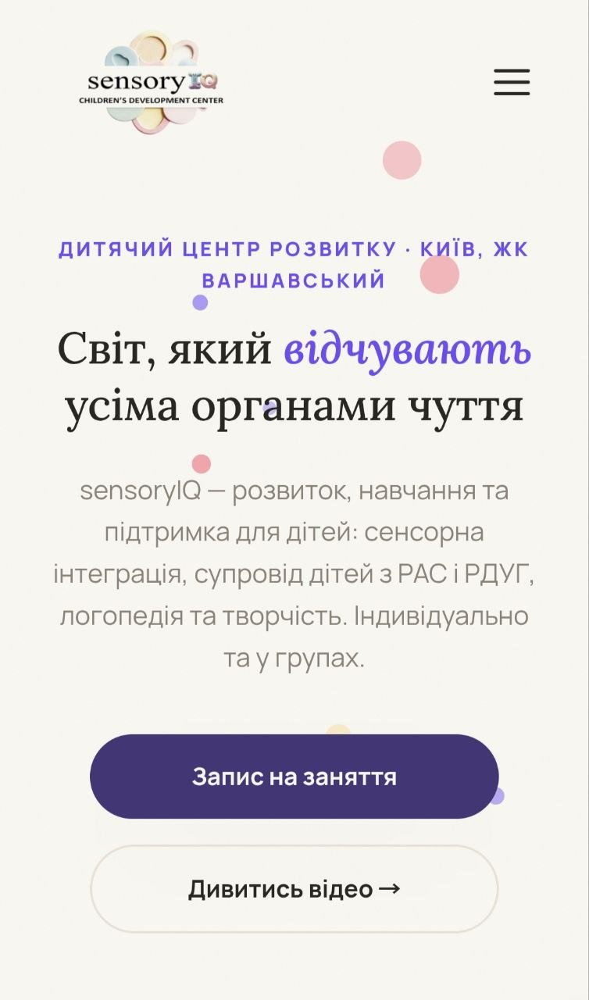
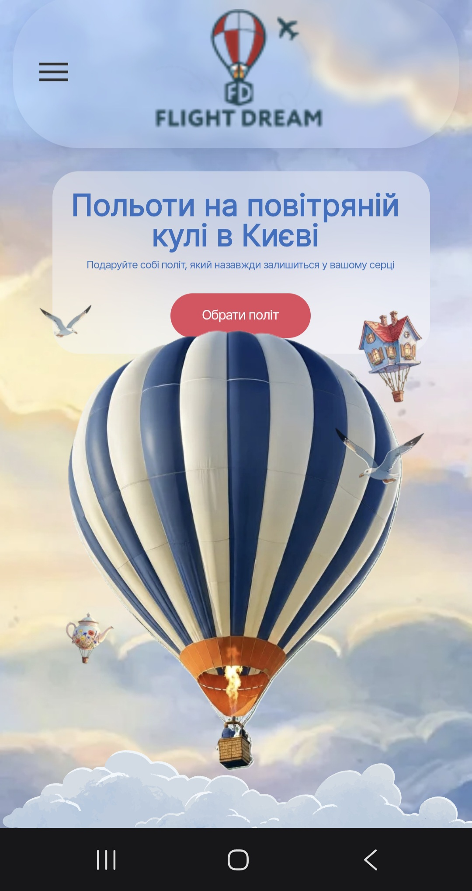
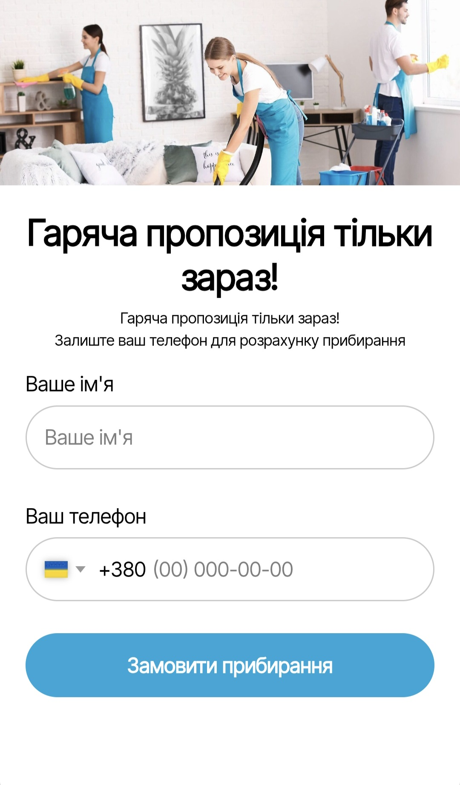

Selected work

AI Reels Creator
Promotional site for a studio that creates AI-generated reels, ad footage, and visuals. A dark, atmospheric theme with a starry motif and a clear call to view work on Instagram.

Dr. Macaron
A brand website for a patisserie selling handmade macarons. A warm cream-and-powder palette with close-up dessert photography creates a mouth-watering, cozy feel.

EnglishGo
Website for a spoken-English course. A purple-neon gradient with a background of scattered letters conveys the energy of learning, while two CTAs guide visitors toward different paths: starting the course or booking a trial lesson.

Pip's Orchard
A playful site for teaching English to young children: letters, counting, and a daily checklist framed as a cozy fruit orchard. A friendly mascot, Pip, warm colors, and large buttons make the experience intuitive even for the youngest users.

sensoryIQ Children's Development Center
Website for the sensoryIQ children's development center in Kyiv. A soft pastel palette, sections covering programs (sensory integration, speech therapy, support for children with ASD and ADHD), class videos, and a booking form build parents' trust from the very first screen.

Flight Dream
Website for a hot-air balloon flight company in Kyiv. A sky-themed illustration with a balloon, a teapot, and a house-shaped basket immediately conveys a festive, dream-like mood.

Cleaning Service
Website for a cleaning company serving apartments and offices in Kyiv. A calm blue-teal palette and photos of an inviting interior build trust before the first call.